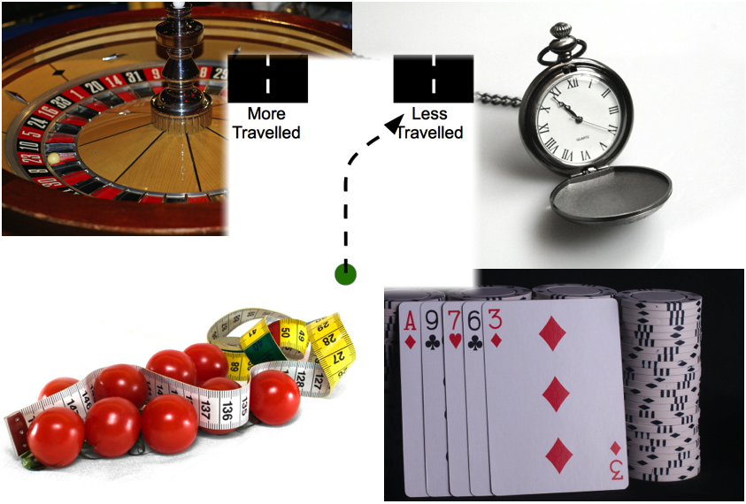

Choice in Action
Denis O'Hora PhD
Choice
To live healthy lives, we must appreciate the choices available to us and decide appropriately between them.

Research
Our work examines how preference evolves during and across choices and how and when features of the environment change in salience or meaning for us.
We mostly use lab-based techniques such as detailed analysis of neural and behavioural measures. We also work on translational research applying technical observations to practical problems.